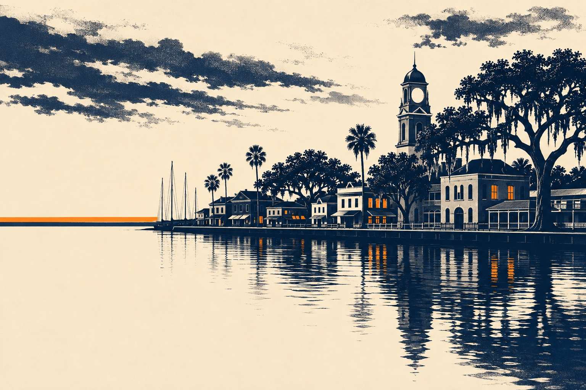
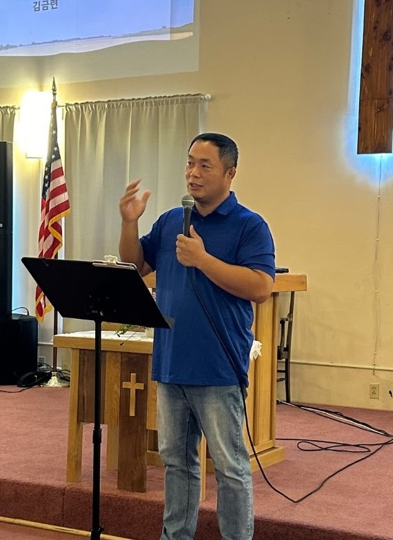

His Story
뜨거운 찬양과 강력한 말씀
마음을 열어주는 뜨거운 찬양으로 하나님 임재의 보좌 앞으로 나아갑니다. 오직 복음과 선명한 성경 말씀에 몰입하며, 영적 가슴이 다시 뛰는 은혜를 경험합니다.
지도 안내: 샌포드 지역 개략도입니다. 북쪽에 레이크 먼로가 있고, I-4 고속도로가 남서에서 북동으로 가로지르며 SR-46, SR-417, SR-429, US 17-92와 만납니다. 스토리교회는 샌포드(북위 28.8028, 서경 81.2731) 일대에 세워지며, 정확한 예배 장소는 추후 공지됩니다. 주요 사역 지역은 샌포드, 레이크메리, 히스로, 롱우드, 데버리, 델토나, 델랜드입니다. 지도는 개략도이며 길찾기용이 아닙니다.

Fig. 01Downtown Sanford across Lake Monroe
주일 저녁 6시. 편한 옷으로 오셔서 함께 예배하고, 예배가 끝나면 원형 테이블에 둘러앉아 식사를 나눕니다.
02비전
스토리교회는 하나님이 써 내려가시는 은혜의 발자취를 온전히 담아내는 거룩한 그릇이 되고자 합니다. 내 안에 살아계신 예수 그리스도의 이야기를 담대히 증거하는 신실한 공동체. 모든 성도가 그의 스토리텔러가 되는 교회, 그것이 우리의 미션입니다.
034단계 사역
우리는 네 개의 단계를 하나의 길로 봅니다. 처음 오신 분이 복음을 만나고, 삶으로 살아내고, 훈련을 통해 깊어지고, 마침내 공동체를 이루는 길입니다.
나를 구원하신 주님의 위대한 이야기. 모든 사역과 예배의 중심에 오직 예수 그리스도의 복음을 두고, 처음 오신 분도 복음의 핵심을 쉽게 이해할 수 있도록 돕습니다.
세상 속에서 내가 직접 살아내는 이야기. 예배 관람객에 머물지 않고, 일터와 가정과 학교에서 주님의 이야기를 삶으로 증거하는 증인으로 섭니다.
말씀과 기도로 내면이 깊어지는 이야기. 222 디사이플십, 커피 브레이크, PRS를 통해 한 사람을 충성스러운 제자로 훈련합니다.
우리가 함께 모여 완성해 가는 이야기. 원형 테이블 중심의 식탁 교제를 통해 그리스도의 성품이 선명하게 드러나는 따뜻한 공동체를 이룹니다.
04주일 예배
전통적인 관람형 예배에서 벗어나, 모든 성도가 깊이 몰입하고 마음을 나누는 참여형 예배를 드립니다. 찬양은 컨템포러리 곡 위주이고, 드레스 코드는 캐주얼입니다.
뜨거운 찬양과 강력한 말씀
마음을 열어주는 뜨거운 찬양으로 하나님 임재의 보좌 앞으로 나아갑니다. 오직 복음과 선명한 성경 말씀에 몰입하며, 영적 가슴이 다시 뛰는 은혜를 경험합니다.
결단과 행동하는 믿음
성도들의 진솔한 영상 간증에 마음을 모으고, 각자의 기도와 결단을 담은 Story Card를 팰릿 월에 직접 꽂습니다. 보는 예배에서 살아내는 믿음으로 넘어가는 시간입니다.
깊은 나눔과 파송
원형 테이블에 둘러앉아 말씀의 은혜를 솔직하게 나누고 서로를 위해 중보합니다. 따뜻한 식탁 교제로 하나 된 후, 세상 속 증인으로 담대히 파송받습니다.
05사역 · 소그룹
큰 모임보다 작은 모임에서 사람이 자랍니다. 교회 건물 밖에서도 편하게 모일 수 있는 네 가지 소그룹을 운영합니다.
목회자가 직접 진행하는 일대일 또는 일대이 양육. 다음 세대 소그룹 리더를 세우는 과정입니다.
목회자 인도교회 건물이 아닌 지역 카페와 성도 가정에서 모입니다. 처음 오신 분도 문턱 없이 참여할 수 있습니다.
평일 저녁 · 주말 오후함께 소리 내어 말씀을 읽고 나누는 모임입니다. 평신도 리더가 인도합니다.
평신도 리더 인도책을 매개로 신앙과 삶을 나누는 모임. 대상별 특성을 고려해 시즌제로 운영합니다.
시즌제 운영06처음 오시는 분
준비 중정확한 예배 장소 주소와 주차 안내, 지도는 첫 예배 전에 이 자리에 올라갑니다.
06.1New Family새가족 2주
예배 후 식탁 교제 시간에 웰컴팀이 함께합니다. 교회 머그컵과 드립백 커피, 손편지가 담긴 웰컴 키트를 드립니다.
담임목사와 함께하는 가벼운 식사 자리입니다. 교회의 비전을 나누고, 무엇보다 당신의 이야기를 듣습니다.
07섬기는 사람

Fig. 1Senior Pastor
Reformed Theological Seminary (RTS) M.Div. 졸업
08함께하기
개척의 자리에 동역자를 모집합니다. 잘하지 않아도 괜찮습니다. 함께 시작할 마음이면 충분합니다.